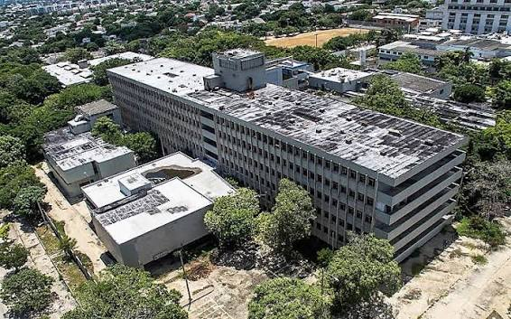

Las Gemelas Fantasma del Antiguo Seguro Social
Paranormal / Leyendas urbanas

La historia
En Barranquilla existe una leyenda urbana que durante años ha despertado la curiosidad y el temor de algunos habitantes: la historia de las gemelas fantasma del antiguo Seguro Social. El relato está relacionado con una antigua sede asistencial ubicada en el barrio Las Palmas, un lugar que con el paso del tiempo quedó asociado con historias de misterio.
Según la tradición popular, algunas personas aseguran haber visto a dos niñas en los alrededores de la antigua edificación. Los relatos describen a unas gemelas que supuestamente aparecen cerca de las escaleras de entrada, sentadas una frente a la otra, como si estuvieran jugando o conversando.
Otros testimonios difundidos en medios de comunicación mencionan que durante la noche se escucharían risas, palmadas y una extraña canción infantil proveniente del interior del edificio. Estas versiones contribuyeron a construir una de las historias paranormales más conocidas de Barranquilla.
Una de las versiones más inquietantes sostiene que las niñas estarían relacionadas con un supuesto acontecimiento trágico. Sin embargo, no existen documentos históricos que permitan confirmar su identidad, su existencia o las circunstancias de una posible muerte.
El misterio de las gemelas
La historia comenzó a ganar popularidad a finales de la década de los noventa, según los relatos recogidos posteriormente por medios de comunicación. Los comentarios de habitantes del sector y las versiones sobre supuestas apariciones ayudaron a mantener viva la leyenda.
Con el paso de los años, el relato se extendió por diferentes sectores de la ciudad. La imagen de dos niñas apareciendo en un antiguo centro asistencial se convirtió en un elemento característico de esta historia, alimentando las conversaciones sobre lugares embrujados y sucesos inexplicables.
En junio de 2024, el periódico El Tiempo publicó un artículo dedicado a esta leyenda urbana. La publicación recopiló las versiones que circulaban sobre las supuestas gemelas y explicó que no existen documentos que demuestren que las niñas hayan existido.
Un antiguo centro asistencial
Más allá de las historias paranormales, las antiguas instalaciones del Seguro Social forman parte de la memoria urbana de Barranquilla. Durante años, estos centros asistenciales recibieron pacientes y familias que acudían en busca de atención médica.
El abandono de algunas de estas edificaciones y su deterioro con el paso del tiempo contribuyeron a generar una atmósfera de misterio. Los espacios vacíos, los recuerdos de quienes frecuentaron el lugar y las historias transmitidas entre vecinos terminaron alimentando diferentes relatos urbanos.
Es importante señalar que en Barranquilla existieron diferentes sedes relacionadas con el Seguro Social. La leyenda de las gemelas se vincula con la antigua sede del barrio Las Palmas, y no debe confundirse con el complejo hospitalario del barrio Los Andes.
Entre los recuerdos y lo sobrenatural
¿Quiénes eran las gemelas? ¿Por qué tantas personas relacionan esta antigua edificación con supuestas apariciones? Son preguntas que forman parte del misterio que rodea esta historia.
Hasta el momento, no existen pruebas verificables de actividad paranormal ni documentación que confirme la existencia de las supuestas niñas. La historia debe entenderse como una leyenda urbana construida a partir de testimonios, rumores y tradición oral.
En Archivos Misteriosos recuperamos este relato como parte del imaginario paranormal de Barranquilla, una historia que demuestra cómo algunos lugares pueden permanecer en la memoria colectiva incluso después de desaparecer o cambiar con el tiempo.
Fuentes
El Tiempo. (2024). La historia detrás del mito de las gemelas fantasma de Barranquilla.
Consultar fuenteEl Heraldo. (2023). Vida y muerte del Seguro de Las Palmas.
Consultar fuenteEl Heraldo. (2023). El abandono que consume la antigua sede del Seguro Social Los Andes.
Consultar fuente